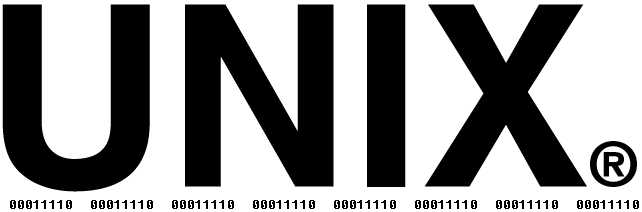
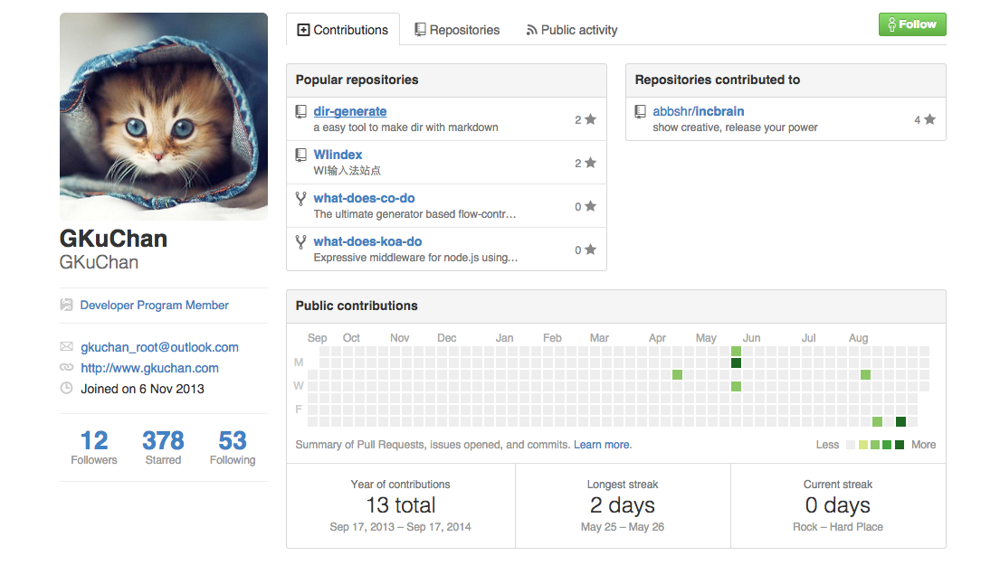

开源与极客文化
刘佳亮
阿里俱乐部

Unix

- Ken Thompson
- Dennis Ritchie
Linux
- Linus Torvalds
- Richard Stallman
开源

- 是什么？
- 为什么？
开源的定义(OSI)
- 自由再发行(Free Distribution)
- 程序源代码(Source Code)
- 派生程序(Derived Works)
- 作者源代码的完整性(Integrity of The Author's Source Code)
- 对于任何人和机构无差别对待(No Discrimination Against Persons or Groups)
- 对于任何领域无差别对待(No Discrimination Against Fields of Endeavor)
- 许可证发行(Distribution of License)
- 许可证不针对某个产品(License Must Not Be Specific to a Product)
- 许可证不得排斥其他软件(License Must Not Restrict Other Software)
- 许可证必须是技术中立的(License Must Be Technology-Neutral)
开源许可证
- Apache License 2.0
- BSD 3-Clause "New" or "Revised" license
- BSD 2-Clause "Simplified" or "FreeBSD" license
- GNU General Public License(GPL)
- GNU Library or "Lesser" General Public License(LGPL)
- MIT License
- Mozilla Public License 2.0
- Eclipse Public License
WTFPL
DO WHAT THE FUCK YOU WANT TO PUBLIC LICENSE
Version 2, December 2004
Copyright (C) 2004 Sam Hocevar
Everyone is permitted to copy and distribute verbatim or modified
copies of this license document, and changing it is allowed as long
as the name is changed.
DO WHAT THE FUCK YOU WANT TO PUBLIC LICENSE
TERMS AND CONDITIONS FOR COPYING, DISTRIBUTION AND MODIFICATION
0. You just DO WHAT THE FUCK YOU WANT TO.
为什么开源？
不是所有东西都是为了盈利才出现的
这世上还有一种东西叫理想
自由
共享
贡献
哪些人在搞开源？
Geek
Do cool things that matter.
—狗哥
论一个极客的基本素养（以狗哥为例）
OS
- Linux
- Mac OS X / Unix
- Windows
- ...
Editor
- Vim
- Emacs
- Sublime Text
- Atom
- ...
Github

域名
http://www.gkuchan.com （狗哥） http://www.zhaoguoquan.com （铨哥）
个人博客
http://blog.gkuchan.com (GeekBase，狗哥博客）
我所敬仰的几位Geek
Linux Torvalds
- 1969年12月28日出生在芬兰
- 1988-1996就读于芬兰赫尔辛基大学，获得博士学位
- 1991年10月5日发布Linux Kernel的第一个版本
- 2000年名列《时代周刊》二十世纪100位最重要人物第17位
- 2005年开发Git
- 2014年获得IEEE计算机先驱奖
Talk is cheap. Show me the code.
Tim Berners Lee
- 万维网(Wolrd Wide Web, WWW)的发明者
- 1989年实现了第一次使用HTTP协议的网络通信
- 1997年获得ACM软件系统奖
- 1999年入选20世纪最重要的100个人物
- 2002年入选BBC最伟大的英国人
- 2012年入选互联网名人堂
This is for everyone.
Aaron Swartz
- 14岁成为RSS1.0开发组的一员
- 15岁进入W3C RDF核心工作组，并撰写了RFC3870，用于定义“语义网络”
- 17岁进入斯坦福大学
- 18岁辍学，写了著名的web.py框架，设想实现一个开放的网络图书馆Internet Open Library，同一时期，与John Gruber合作开发了Markdown
- 19岁由于Y Combinator的引荐，成为Reddit的创始人
- Aaron热爱Wiki，喜欢开放，在他的青少年时期，他就在不懈地和一切限制信息自由交换和自由共享的做法做斗争。
- 美国法院行政办公室提供一个政府服务，将法庭记录放在网上，供人们付费查看。Aaron觉得这些文件本就属于公众，没有Copyright，不应该收费。22岁时，他抓取了美国法院行政办公室的270万文档，供民众免费下载，并因此受到FBI调查。
- Aaron觉得那些对人类有价值的科学和文化遗产属于全人类，美国大学每年会向那些出版学术期刊、论文的机构（比如 ISI，Jstor）支付许可费用，许可费用极高，他觉得这是一种悲剧。于是完美主义的他产生了一种责任感。
- Aaron在MIT做访问学者的时候有JSTOR的帐号，可以通过MIT的网络访问大量的学术期刊。他把笔记本放到交换机的机房里，24小时下载这些期刊。
- 那年Aaron才24岁，2011年7月11日，检查官以通信欺诈、计算机欺诈、非法获得信息，以及破坏被保护的罪名电脑来起诉他。
- 当时，摆在Aaron面前有两条路：1）认罪，承认犯下重罪，35年的判决会变成3个月入狱+1年的居家监禁（不得使用电脑），2）不认罪，那就有可能接受35监禁年的最坏结果。Aaron选择了后者，而他的女友则选择了认罪。
- 2012年，Aaron号召大家和政府做斗争，反对SOPA，最终导致白宫放弃了这个法案。
- 次年2012年9月，政府对Aaron进行了更为严厉的起诉，新加入了另外9条起诉，如果成立，Aaron最多获刑50年外加100万美金的罚款。同样，检察官给出了优惠条件，只要Aaron认罪，那就只起诉他6个月的监禁。Aaron再次拒绝。
- 2013年1月11日，Aaron被发现在家中上吊自杀。

相信你应该真的每时每刻都问自己，现在这世界有什么最重要的事是我能参与去做的？ 如果你没在做那最重要的事，那又是为什么？